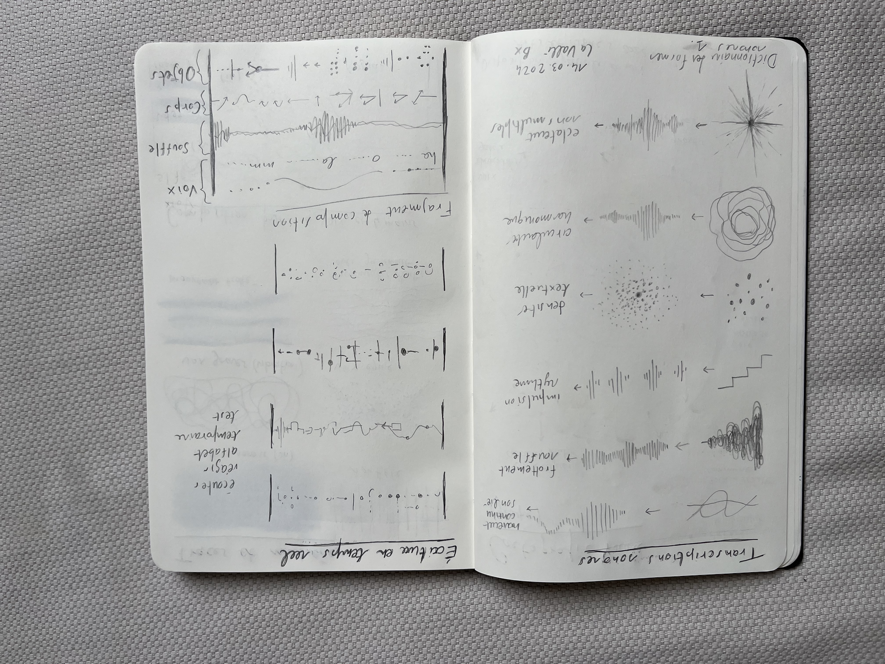
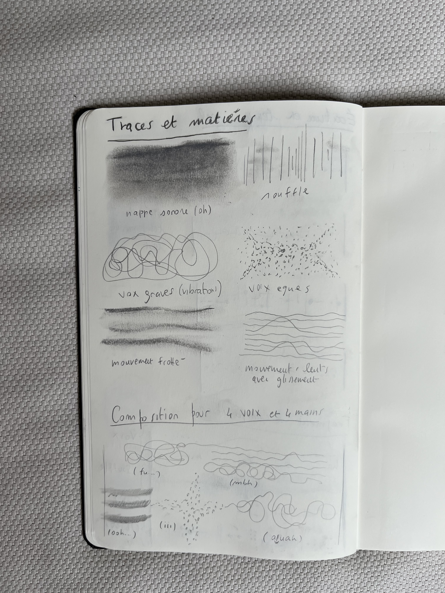
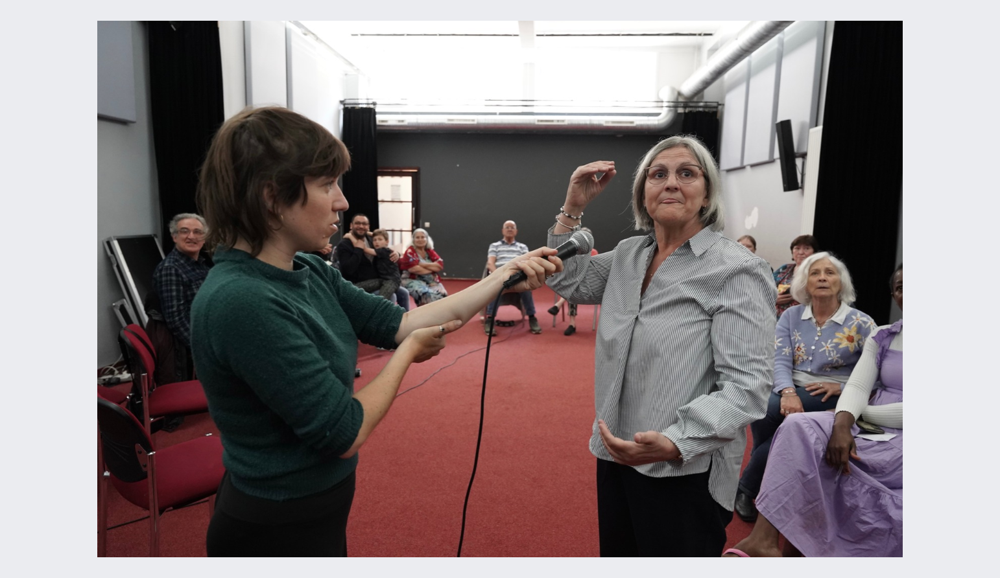
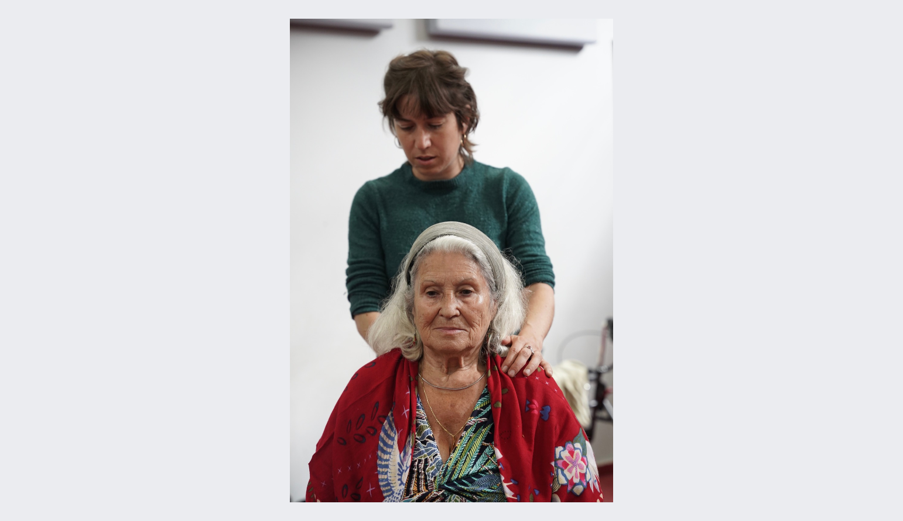
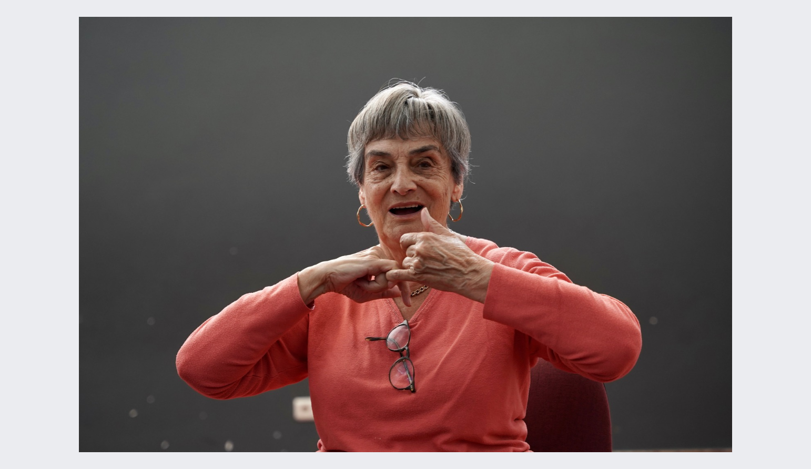

RESEARCH / SOUND / VOICE / MOVEMENT
Bodies, Voices and Sound Transcriptions
DRAWING / VOICE / MOVEMENT / GRAPHIC NOTATION / SOUND
Bodies, Voices and Sound Transcriptions is an ongoing research project exploring relationships between body, voice, drawing and sound.
Through graphic notation, vocal experimentation and collective exercises, gestures and sounds are translated into visual traces, which can in turn become instructions for new movements, voices and interpretations.
RESEARCH PROCESS



The notebooks function as working tools where sound, movement, voice and drawing are continuously translated into one another.
COLLECTIVE EXPERIMENTATION



Developed through collective workshops in Brussels, the research invites participants to translate bodily and vocal experiences into graphic forms, and to reinterpret these traces through movement, voice and sound.
CONTEXTS
Arts et Publics / CFS / LaVallée
Selected parts of the research were developed with the support of the Commune de Saint-Gilles.
ARTISTIC DIRECTION
Ilaria Fantini
Research, concept, drawing, graphic notation, sound and vocal experimentation, workshop design and facilitation.